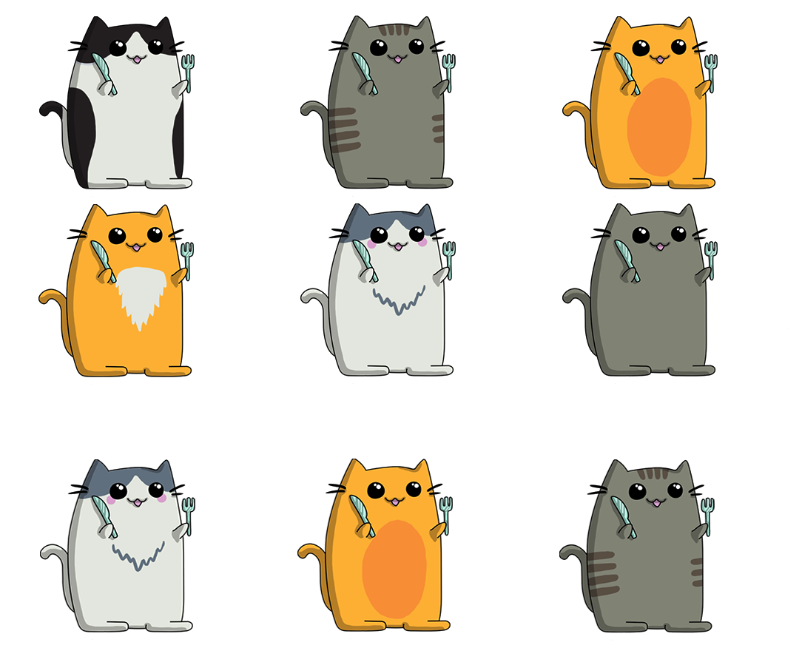

<!DOCTYPE html>
<html lang="en">
  <head>
    <meta charset="utf-8" />
    <meta name="viewport" content="width=device-width, initial-scale=1.0, maximum-scale=1.0, user-scalable=no" />

    <title>Weaver and cats</title>
    <link rel="stylesheet" href="./dist/reveal.css" />
    <link rel="stylesheet" href="./dist/theme/black.css" id="theme" />
    <link rel="stylesheet" href="./css/highlight/zenburn.css" />
    <link rel="stylesheet" href="./_assets/./dss.css" />

  </head>
  <body>
    <div class="reveal">
      <div class="slides"><section  data-markdown><script type="text/template">


**Who am I ?**

* Olivier Mélois
* Scala since late 2013
* Works for Disney
* has 5 animals
* 95% vegetarian
</script></section><section  data-markdown><script type="text/template">

**Where am I ?**


</script></section><section  data-markdown><script type="text/template">
## An intro to cats-effect


## and weaver-test
</script></section><section  data-markdown><script type="text/template">
**Agenda**

* Scala
* why pure FP matters ?
* cats-effect
* weaver-test
</script></section><section  data-markdown><script type="text/template">
**Scala**


</script></section><section  data-markdown><script type="text/template">
strongly typed, compiles to JVM

```scala
case class Dog(name : String)
case class Cat(name : String)

def meow(cat : Cat) = println(s"$cat says meow")

meow(Dog("Barkinton the Third"))

// error: type mismatch;
//  found   : repl.Session.App.Dog
//  required: repl.Session.App.Cat
// meow(Dog("Barkinton the Third"))
//      ^^^^^^^^^^^^^^^^^^^^^^^^^^
```
</script></section><section  data-markdown><script type="text/template">
Scala is imperative friendly ...

```scala
var i = 1
// i: Int = 1
while(i < 10) {
  if (i % 2 == 1){
    println(i + 2)
  }
  i += 1
}
// 3
// 5
// 7
// 9
// 11
```
</script></section><section  data-markdown><script type="text/template">
... but also functional friendly

```scala
def isOdd(x : Int) = x % 2 == 1

(1 to 10).map(_ + 2).filter(isOdd).foreach(println)
// 3
// 5
// 7
// 9
// 11
```
</script></section><section  data-markdown><script type="text/template">
Scala is (very) unopinionated ...
</script></section><section  data-markdown><script type="text/template">
... but pure FP is getting traction
</script></section><section  data-markdown><script type="text/template">
**Why pure FP matters ?**
</script></section><section  data-markdown><script type="text/template">
**Playing music from code**
</script></section><section  data-markdown><script type="text/template">

</script></section><section  data-markdown><script type="text/template">
```scala
import javax.sound.midi._
import javax.sound.midi.ShortMessage._

val info =  MidiSystem
              .getMidiDeviceInfo()
              .filter(_.getName == "Gervill").headOption
val device = info.map(MidiSystem.getMidiDevice).get
val rcvr = device.getReceiver()
```
</script></section><section  data-markdown><script type="text/template">

```scala
def note(key: Int, gateTime: Long) : Unit = {
  val msg = new ShortMessage

  msg.setMessage(NOTE_ON, 0, key, 93)
  rcvr.send(msg, -1) // side effect

  Thread.sleep(gateTime) // blocked thread

  msg.setMessage(NOTE_OFF, 0, key, 0)
  rcvr.send(msg, -1) // side effect
}
```
</script></section><section  data-markdown><script type="text/template">
**Here's a piano ...**

```scala
val bpm = 66
// bpm: Int = 66
val sq = 60L * 1000 / bpm / 4 //semiquaver (aka 16th)
// sq: Long = 227L //semiquaver (aka 16th)

object piano {
  def C(n: Int = 1) = note(60, sq * n)
  def D(n: Int = 1) = note(62, sq * n)
  def E(n: Int = 1) = note(64, sq * n)
  def F(n: Int = 1) = note(65, sq * n)
  def G(n: Int = 1) = note(67, sq * n)
  def A(n: Int = 1) = note(69, sq * n)
  def B(n: Int = 1) = note(71, sq * n)
  def c(n: Int = 1) = note(72, sq * n)
}
```
</script></section><section  data-markdown><script type="text/template">
**... and here's a song**


```scala
import piano._
C()
D()
E()
F()
G()
A()
B()
c(2)
```
</script></section><section  data-markdown><script type="text/template">

<div id = "demo1"></div>


</script></section><section  data-markdown><script type="text/template">
**... a song as a list of notes ?**

```scala
val song = List(C(), D(), E())
// song: List[Unit] = List((), (), ())


song ++ song
song.reverse
```
hmmm
</script></section><section  data-markdown><script type="text/template">
**... two notes at the same time ?**

```scala
???
```
errr
</script></section><section  data-markdown><script type="text/template">
Imperatively triggering side-effects

hinders expressiveness
</script></section><section  data-markdown><script type="text/template">
**Side-effects ?**

* stdout/stdin
* RNG
* file-system interactions
* network calls
* playing sound
</script></section><section  data-markdown><script type="text/template">
**... they break referential transparency**

```scala
import java.util.UUID

val uuidVal  = UUID.randomUUID()
// uuidVal: UUID = 8fd5e13a-260b-428c-bf66-6e15b9587481

uuidVal == uuidVal
// res4: Boolean = true

UUID.randomUUID() == UUID.randomUUID()
// res5: Boolean = false
```
</script></section><section  data-markdown><script type="text/template">
Referential transparency enables compositionality
</script></section><section  data-markdown><script type="text/template">
describing

vs

executing
</script></section><section  data-markdown><script type="text/template">
declarative

vs

imperative
</script></section><section  data-markdown><script type="text/template">
pure FP

vs

the world
</script></section><section  data-markdown><script type="text/template">
1877: the phonograph


Listening to music is now decoupled from making it
</script></section><section  data-markdown><script type="text/template">

</script></section><section  data-markdown><script type="text/template">
Referentially transparent side-effects (in Scala)


zio / monix / cats-effect
</script></section><section  data-markdown><script type="text/template">
**cats-effect**




</script></section><section  data-markdown><script type="text/template">
**The IO type**


```scala
import cats.effect.IO

def printStr(o: Any) : IO[Unit] = IO(println(o.toString))

// IO records the side effect ...
val sideEffect = printStr("hello")
// sideEffect: IO[Unit] = IO$161056709

// ... for a later use
sideEffect.unsafeRunSync()
// hello
```
</script></section><section  data-markdown><script type="text/template">
Composing side effects sequentially

```scala
import cats.implicits._

val twice = sideEffect *> sideEffect
// twice: IO[Unit] = IO$277206178

twice.unsafeRunSync()
// hello
// hello
```
</script></section><section  data-markdown><script type="text/template">
Composing side effects in parallel
```scala
val hello = printStr("hello")
val world = printStr("world")
```


```scala
{
  val delayedWorld = world.delayBy(100.millis)
  val parallel = (delayedWorld, hello).parTupled
  parallel.void.unsafeRunSync()
}
// hello
// world
```
</script></section><section  data-markdown><script type="text/template">
Composing collections of side effects

```scala
val fiveTimes = (1 to 5).toList.traverse(printStr)
// fiveTimes: IO[List[Unit]] = IO$2038757336

fiveTimes.void.unsafeRunSync()
// 1
// 2
// 3
// 4
// 5
```
</script></section><section  data-markdown><script type="text/template">
Generic functions

```scala
implicit class ioExtensions[A](io : IO[A]) {
  val repeat : IO[Nothing] = io >> repeat
}
```
</script></section><section  data-markdown><script type="text/template">
Forking/cancelling side effects

```scala
val helloWorlds = for {
  fork   <- world.delayBy(100.millis).repeat.start
  _      <- hello
  _      <- fork.cancel.delayBy(500.millis)
  _      <- printStr("!!")
} yield ()
// helloWorlds: IO[Unit] = IO$1460278283


helloWorlds.void.unsafeRunSync()
// hello
// world
// world
// world
// world
// !!
```
</script></section><section  data-markdown><script type="text/template">

Back to our music sheet
</script></section><section  data-markdown><script type="text/template">
Making notes referentially transparent

```scala
def pureNote(key: Int, gateTime: Long): IO[Unit] = {
  val press = IO {
    val msg = new ShortMessage
    msg.setMessage(NOTE_ON, 0, key, 93)
    rcvr.send(msg, -1)
  }
  val wait = IO.sleep(gateTime.millis)
  val release = IO {
    val msg = new ShortMessage
    msg.setMessage(NOTE_ON, 0, key, 0)
    rcvr.send(msg, -1)
  }
  press *> wait *> release
}
```
</script></section><section  data-markdown><script type="text/template">
Our pure piano ...

```scala
object piano2 {
  def C(n: Int = 1) = pureNote(60, sq * n)
  def D(n: Int = 1) = pureNote(62, sq * n)
  def E(n: Int = 1) = pureNote(64, sq * n)
  def F(n: Int = 1) = pureNote(65, sq * n)
  def G(n: Int = 1) = pureNote(67, sq * n)
  def A(n: Int = 1) = pureNote(69, sq * n)
  def B(n: Int = 1) = pureNote(71, sq * n)
  def c(n: Int = 1) = pureNote(72, sq * n)
}
```
</script></section><section  data-markdown><script type="text/template">
... and our song :

```scala
import piano2._

val notes : List[IO[Unit]] =
  List(C(), D(), E(), F(), G(), A(), B(), c(2))

val sequencedNotes : IO[List[Unit]] = notes.sequence
val scale : IO[Unit] = sequencedNotes.void
```
</script></section><section  data-markdown><script type="text/template">
Other songs:

```scala
val reversed = notes.reverse.sequence.void

val repeated = scale.repeat

val revRepeated = reversed.delayBy((2 * sq).millis)

// Running 4 and 5 in parallel
val song = (repeated, revRepeated).parTupled.void
```
</script></section><section  data-markdown><script type="text/template">
<div id = "demo2"></div>


</script></section><section  data-markdown><script type="text/template">
**Cats-effect: resource management**
</script></section><section  data-markdown><script type="text/template">
Not shown in the previous slides :

```scala
device.open()
try {

  // music goes here

} finally {
  device.close()
}
```
</script></section><section  data-markdown><script type="text/template">
Problems :

* try/finally tricky with concurrency
* opening/closing a device are side effects
</script></section><section  data-markdown><script type="text/template">
Solution:

```scala
import cats.effect.Resource
```
</script></section><section  data-markdown><script type="text/template">
Step 1: suspend all the side effects

```scala
// what happens before "try"
def acquire(i : Int) : IO[Int] =
  printStr(s"acquiring $i").map(_ => i)

// what happens inside "finally"
def release(i : Int) : IO[Unit] =
  printStr(s"releasing $i")
```
</script></section><section  data-markdown><script type="text/template">
Step 2: combine acquisition and release

```scala
def res(i : Int) : Resource[IO, Int] =
  Resource.make(acquire(i))(release)
```
</script></section><section  data-markdown><script type="text/template">
Step 2 (bis): compose resources

```scala
val myResource : Resource[IO, List[Int]] = for {
  x1 <- res(1)
  x2 <- res(2)
  x3 <- res(x1 + x2)
} yield List(x1, x2, x3)
```
</script></section><section  data-markdown><script type="text/template">
Step 3: use the resource

```scala
// what we want inside "try"
def printAll(list: List[Int]) : IO[Unit] =
  list.map(_.toString).traverse(printStr).void

val program : IO[Unit] = myResource.use(printAll)
```
</script></section><section  data-markdown><script type="text/template">
Step5: run the program

```scala
program.unsafeRunSync()
// acquiring 1
// acquiring 2
// acquiring 3
// 1
// 2
// 3
// releasing 3
// releasing 2
// releasing 1
```
</script></section><section  data-markdown><script type="text/template">
Back to our music ...
</script></section><section  data-markdown><script type="text/template">
Step 1: suspend all the side effects

```scala
val acquireDevice : IO[MidiDevice] = IO {
  MidiSystem.getMidiDeviceInfo()
            .filter(_.getName == "Gervill")
            .headOption
            .get
}.flatMap { info => IO(MidiSystem.getMidiDevice(info))
}.flatTap { device => IO(device.open)}

def releaseDevice(d: MidiDevice) : IO[Unit] = IO(d.close())
```
</script></section><section  data-markdown><script type="text/template">
Step 2: combine acquisition and release

```scala
import javax.sound.midi.Receiver

val makePiano: Resource[IO, PurePiano] =
  Resource
    .make(acquireDevice)(releaseDevice)
    .map(d => new PurePiano(d.getReceiver()))

class PurePiano(rcvr: Receiver) {
  // ... note definitions
}
```
</script></section><section  data-markdown><script type="text/template">
Step 3: use the resource

```scala
makePiano.use(piano => playSong(piano))
```
</script></section><section  data-markdown><script type="text/template">**Cats-effect: concurrency primitives**

* atomic reference
* semaphores
* promises
* etc ...
</script></section><section  data-markdown><script type="text/template">
**Weaver-test**


https://disneystreaming.github.io/weaver-test/
</script></section><section  data-markdown><script type="text/template">
**Motivations**

* speed
* debuggability
* maintainability
</script></section><section  data-markdown><script type="text/template">
Conciseness

```scala 
import weaver._

object MySuite extends SimpleIOSuite {

  test("hello") {
    expect("hello".length() == 5)
  }

  test("world") {
    IO(expect("world".length() == 5))
  }

}

```
</script></section><section  data-markdown><script type="text/template">


</script></section><section  data-markdown><script type="text/template">

Clear reporting

```scala
test("contains 5") {
  val list = (1 to 3).map(_ * 2)
  expect(list.contains(5))
}
```
</script></section><section  data-markdown><script type="text/template">

</script></section><section  data-markdown><script type="text/template">
Aggregated failure reports

```scala
object suite1 extends SimpleIOSuite {
  test("good 1") { expect(1 + 1 == 2) }
  test("bad 1") { expect(1 * 1 == 2) }
}

object suite2 extends SimpleIOSuite {
  test("good 2") { expect(2 + 2 == 4) }
  test("bad 2") { expect(2 * 2 == 5) }
}
```
</script></section><section  data-markdown><script type="text/template">


</script></section><section  data-markdown><script type="text/template">
Composable assertions

```scala
val i = 5
expect(i < 0) || expect(i > 2) && expect(i < 6)
```
</script></section><section  data-markdown><script type="text/template">
Parallelism by default

```scala
for (i <- 1 to 100) test(s"hello $i") {
  IO(expect("hello".length() == 5)).delayBy(1.second)
}
```
</script></section><section  data-markdown><script type="text/template">

</script></section><section  data-markdown><script type="text/template">
Principled resource management

```scala
override type Res = String
override def sharedResource: Resource[IO, String] =
  Resource
    .make(printStr("acquiring"))(_ => printStr("releasing"))
    .map(_ => "hello")

val chars =  List('h', 'e', 'l')

for (c <- chars) test(s"contains $c") { shared =>
  expect(shared.contains(c))
}
```
</script></section><section  data-markdown><script type="text/template">

</script></section><section  data-markdown><script type="text/template">
Conclusion
</script></section><section  data-markdown><script type="text/template">
github links :

* [typelevel/cats-effect](https://github.com/typelevel/cats-effect)
* [disneystreaming/weaver-test](disneystreaming/weaver-test)

Thanks for listening :)
</script></section><section  data-markdown><script type="text/template">
We are hiring

* Senior Scala Engineer - Manchester
* Senior Scala Engineer - London
* Scala Engineer        - London


Jenna Eddie - jenna.eddie@disneystreaming.com

Sam Facer   - sam.facer@disneystreaming.com
</script></section><section  data-markdown><script type="text/template">
Questions ?


</script></section></div>
    </div>
    <footer>
      <div class="ftr"></div>
    </footer>

    <script src="./dist/reveal.js"></script>

    <script src="./plugin/markdown/markdown.js"></script>
    <script src="./plugin/highlight/highlight.js"></script>
    <script src="./plugin/zoom/zoom.js"></script>
    <script src="./plugin/notes/notes.js"></script>
    <script src="./plugin/math/math.js"></script>
    <script>
      function extend() {
        var target = {};
        for (var i = 0; i < arguments.length; i++) {
          var source = arguments[i];
          for (var key in source) {
            if (source.hasOwnProperty(key)) {
              target[key] = source[key];
            }
          }
        }
        return target;
      }

      // default options to init reveal.js
      var defaultOptions = {
        controls: true,
        progress: true,
        history: true,
        center: true,
        transition: 'default', // none/fade/slide/convex/concave/zoom
        plugins: [
          RevealMarkdown,
          RevealHighlight,
          RevealZoom,
          RevealNotes,
          RevealMath
        ]
      };

      // options from URL query string
      var queryOptions = Reveal().getQueryHash() || {};

      var options = extend(defaultOptions, {"transition":"fade"}, queryOptions);
    </script>


    <script>
      Reveal.initialize(options);
    </script>
    <script type="text/javascript" src="./assets/out-bundle.js">
    </script>
  </body>
</html>
